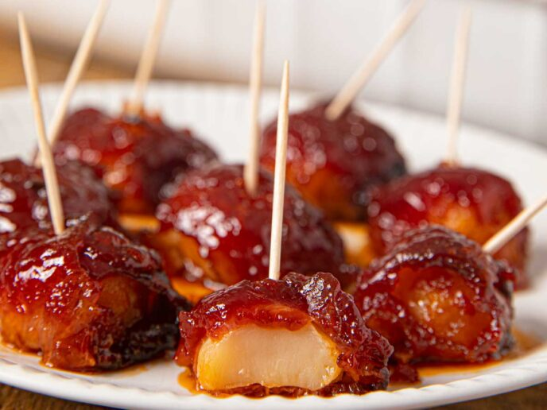

Bacon-Wrapped Water Chestnuts
Bacon-Wrapped Water Chestnuts

Description
Soy sauce, smoky bacon and sweet brown sugar dress up water chestnuts for a festive party appetizer. The crunchy centers are a great counter to the crisp, meaty bacon and the sticky-sweet glaze. This is perhaps my favorite appetizer, and one that I fondly remember eating during holidays at my grandparents' house as a child.
Ingredients
- Two 8-ounce cans whole water chestnuts, drained and rinsed
- 2 tablespoons low-sodium soy sauce
- 14 slices bacon, cut crosswise into thirds
- 1/3 cup ketchup
- 1/3 cup firmly-packed dark brown sugar
- 1 tablespoon Worcestershire sauce
- Nonstick cooking spray
- Freshly ground black pepper